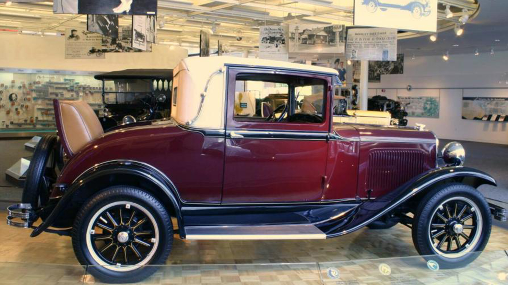
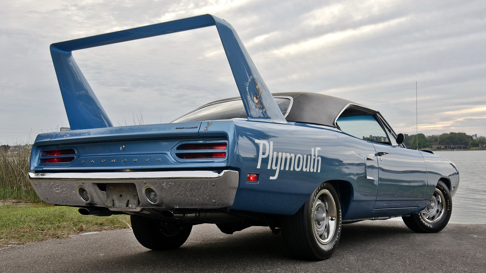
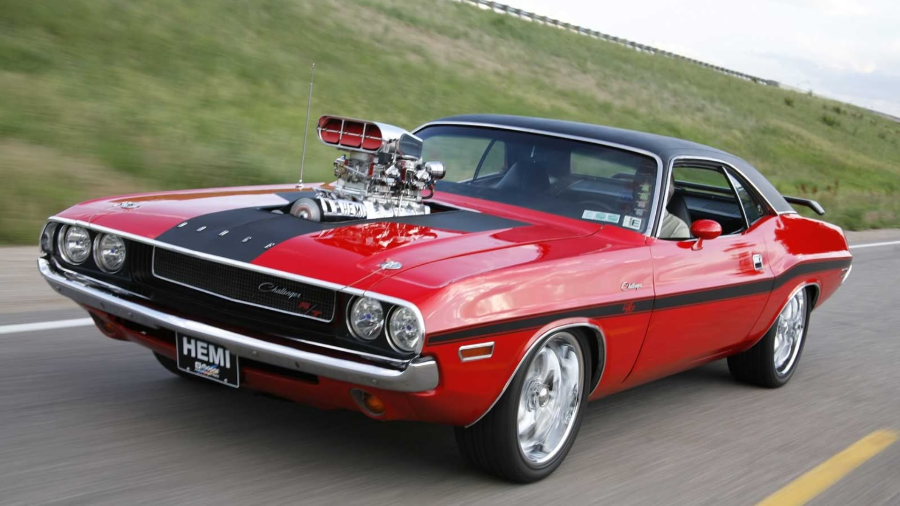

Plymouth
Bakgrunn
Hovedmålet til Plymouth var å konkurrere med Ford og Chevrolet i den billegare klassen. Deiras første serieproduserte bil var Model Q. Den blei sett i produksjon i 1928. Plymouth har produsert mange tidlause klassikarar, og har spelt ei stor rolle i den amerikanske bilhistoria. Dessverre gjekk dei konkurs i 2001. Den siste modellen dei produserte heitte Neon. Den selde ikkje noko særleg godt, og det var også noko av grunnen til at dei gjekk konkurs.
LOGO
Viktige periodar
1928

Det var denne bilen som skulle konkurrere med billegversjonane til Chevrolet og Ford. Model Q var litt dyrare enn konkurrentane sine, men tilbaud meir luksus enn dei.
1952

No tilbaud billegversjonen endå meir luksus. Den var no ein bestselgar blant dei billege bilane på den tida. Den var så poppulær at den er fortsatt relevant i dag. Det er denne bilen som er med i barnefilmen "Biler"
1970

Over til litt raskare tider i Plymouth historia. Superbirden frå 1970 var den første bilen i amerikansk historie som var designa i ein vindtunell. Det førte til at den var veldig aerodynamisk. Den kraftigast versjonen kom med 425 hestekrefter. Dette er ein absolutt klassikar i amerikansk bilhistorie.
1973

Plymouth Barracudaen, også kalla Cuda, var ein skikkeleg muskelbil. Den var sportsleg og velskapt. Den byrja som ein liten sportsleg bil, men utvikla seg til ein stor og kraftig muskelbil på over nokre få år.